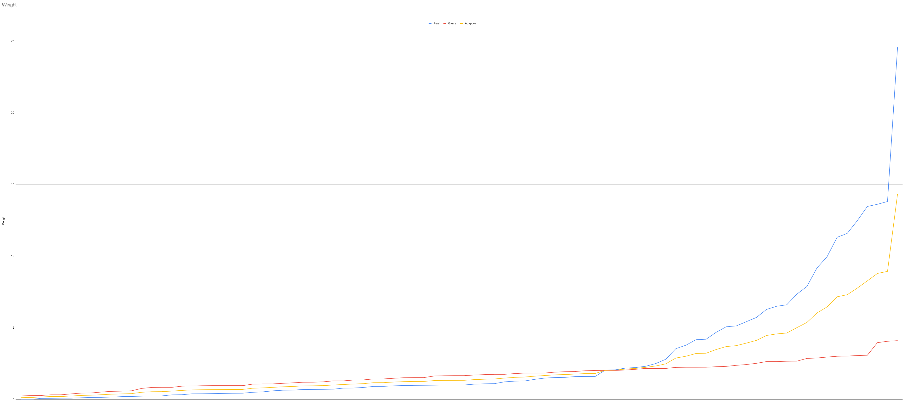
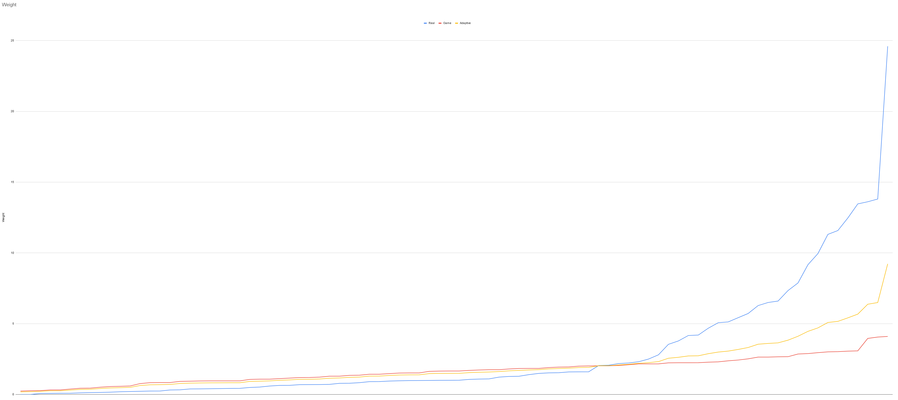
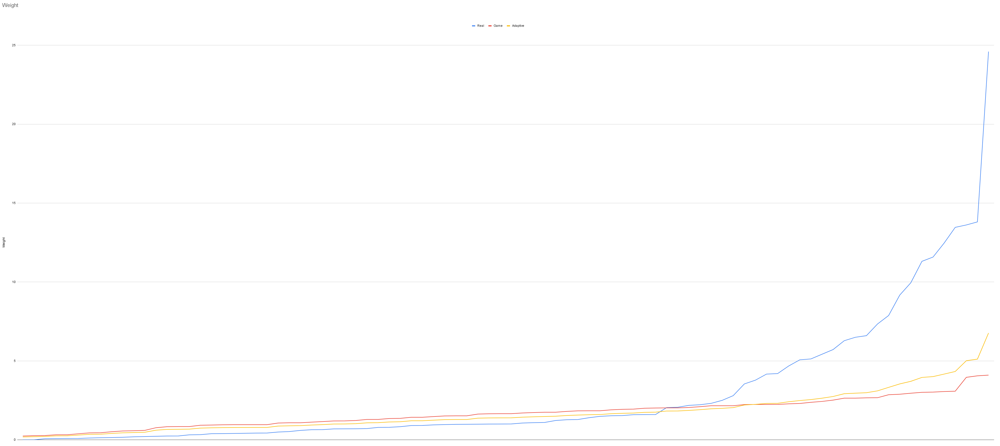

In this article I describe the principle of calculating new weight for equipment in the Resolver mod. You can read more about the study results here
In order to properly rebalance the weight of all items, I decided not to just estimate that “this item is lighter than that, and that one is lighter than that”
, but to calculate the real weight of each item and then, if necessary, adapt them to the game.
Weight calculation
So let's remember a little physics. How is mass calculated:
That is, to find out the weight of each object, it is enough to know its volume and density. The first can be obtained in Blender by enabling the built-in 3D Print Toolbox plugin. And for the second one, I just scoured the Internet to get this table of densities:
{kind=link}
Table
Yes, for this it is also necessary to divide the model into parts where another material is used, and for fabrics and paper I simply calculated the surface (removing extra polygons in advance, in some cases removing the volume of the model)
, and multiplied by the density in m².
Note! All calculations are approximate, due to many factors: calculation of volume using Low Poly models, lack of accurate information about the materials used for some masks, materials baked into the texture were not always taken into account, etc.
Adapting weight to game balance
For adaptation, it is necessary that the real weight curve tends to the game weight curve, and the further the real value is from the game value, the more it should approach it. However, the adapted values must maintain proportions with other.
The most suitable result was obtained by taking the average between two values:
{kind=link}
But since heavy objects still remained very heavy, we had to average it again to the game indicators:
{kind=link}
I then lowered the values by 10% of the real value, which brought the heavy items even closer to the game value:
{kind=link}
And finally, I lowered the final values by 6% in order to bring the values closer to the game balance, but maintain the ratios: